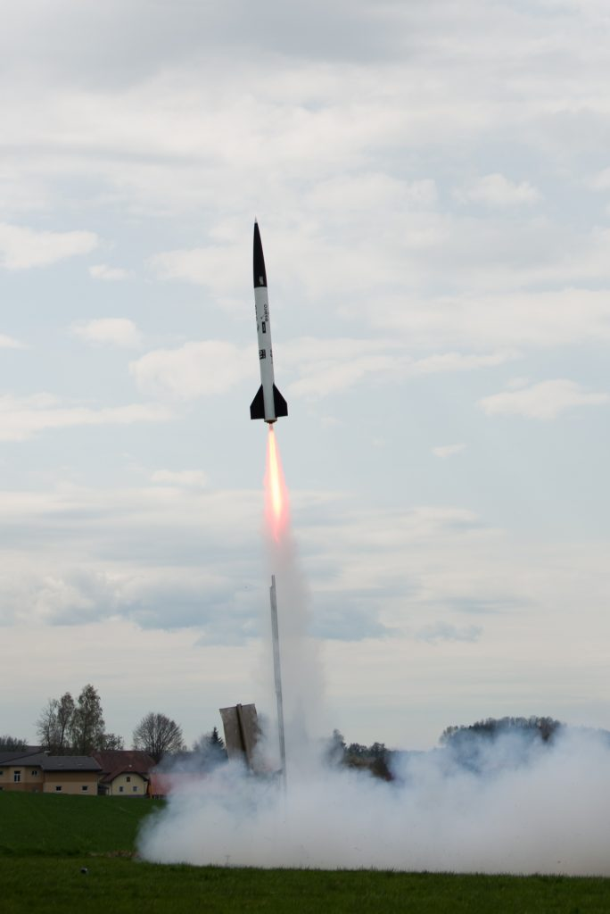

The CanSat project is a collaboration of the TU Wien Space Team with ESERO Austria as part of ESA's international CanSat competition

Space Team is the official launch provider for any Austrian team taking part in the CanSat competition since 2017. While I'm not directly involved with the day-to-day in this project, I did help operations as well as social media presence in a few years already since joining the team.